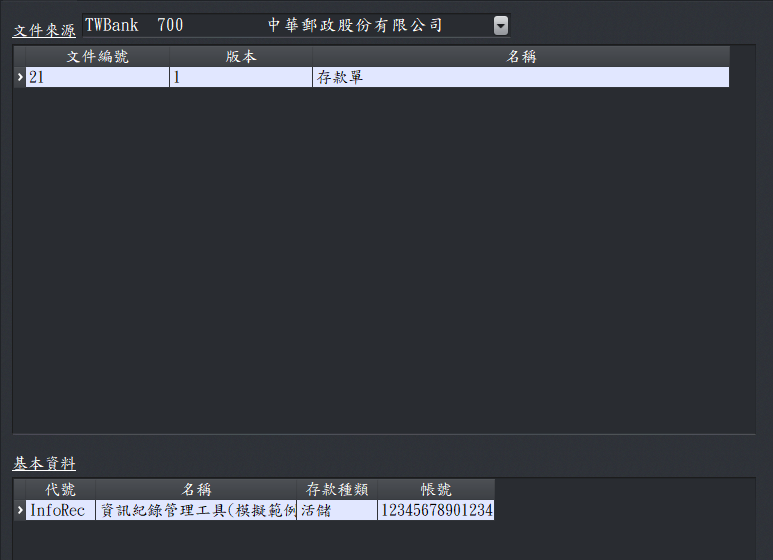
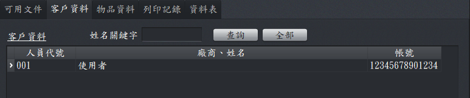
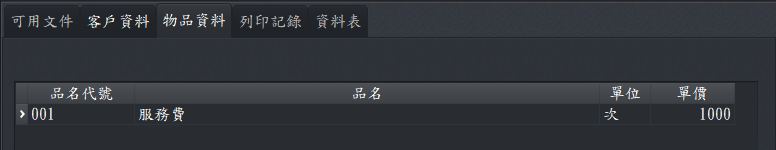

工作頁
工作頁主要有下列4個：
- 可用文件：要進行文件編輯時，先選擇文件來源，再指定基本資料(使用文件的主體)後，才可以輸入資料。當資料儲存時，日後若有需要就可以用文件及基本資料找到歷史紀錄(由列印紀綠工作頁)。

可用文件工作頁
- 客戶資料：文件編的相對人，例如發票的收人、信件的收信人)。

客戶資料工作頁
- 物品資料：已儲存在本系統資料庫內的物品，會出現於此，常用於發票的品名，或會計文件的科目。。

物品資料工作頁
- 列印記錄：顯示的資料來源有2個。
- 文件領用登錄：文件一經登路後，系統就會產生相關資料
- 文件未先登錄：於文件編輯後，如有存檔或列印，就會自動儲存(或更新)資料。
列印記錄